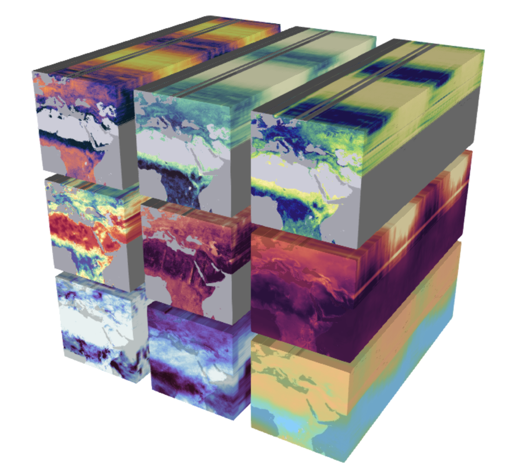

import os
import requests
import pandas as pd
import numpy as np
import xarray as xr # This is the package we'll explore8 Data Structures and Formats for Large Data
8.1 Introduction
Efficient and reproducible data analysis begins with choosing a proper format to store our data, particularly when working with large, complex, multi-dimensional datasets. Consider, for example, the following Earth System Data Cube from Mahecha et al. 2020, which measures nine environmental variables at high resolution across space and time. We can consider this dataset large (high-resolution means we have a big file), complex (multiple variables), and multi-dimensional (each variable is measured along three dimensions: latitude, longitude, and time). Additionally, necessary metadata must accompany the dataset to make it functional, such as units of measurement for variables, information about the authors, and processing software used.

Keeping complex datasets in a format that facilitates access, processing, sharing, and archiving can be at least as important as how we parallelize the code we use to analyze them. In practice, it is common to convert our data from less efficient formats into more efficient ones before we parallelize any processing. In this lesson, we will
familiarize ourselves with the NetCDF data format, which enables us to store large, complex, multi-dimensional data efficiently, and
learn to use the
xarrayPython package to read, process, and create NetCDF files.
8.2 Objectives
- Learn about the NetCDF data format:
- Characteristics: self-describing, scalable, portable, appendable, shareable, and archivable
- Understand the NetCDF data model: what are dimensions, variables, and attributes
- Advantages of random/arbitrary access and how that applies to parallel computing
- Learn how to use the
xarrayPython package to work with NetCDF files:- Describe the core
xarraydata structures, thexarray.DataArrayand thexarray.Dataset, and their components, including data variables, dimensions, coordinates, and attributes - Create
xarray.DataArraysandxarra.DataSetsout of rawnumpyarrays and save them as netCDF files - Load
xarraydatasets from netCDF and understand the attributes view - Perform basic indexing, processing, and reduction of
xarray.DataArrays
- Describe the core
8.3 NetCDF data format
NetCDF (network Common Data Form) is a set of software libraries and self-describing, machine-independent data formats that support the creation, access, and sharing of array-oriented scientific data. NetCDF was initially developed at the Unidata Program Center and is supported on almost all platforms, and parsers exist for most scientific programming languages.
8.3.1 Characteristics
NetCDF files are designed to be [1]:
Self-describing: Information describing the data contents of the file is embedded within the data file itself. This means that there is a header describing the layout of the rest of the file and arbitrary file metadata.
Scalable: Small subsets of large datasets may be accessed efficiently through netCDF interfaces, even from remote servers.
Portable: A NetCDF file is machine-independent i.e. it can be accessed by computers with different ways of storing integers, characters, and floating-point numbers.
Appendable: Data may be appended to a properly structured NetCDF file without copying the dataset or redefining its structure.
Sharable: One writer and multiple readers may simultaneously access the same NetCDF file.
Archivable: Access to all earlier forms of NetCDF data will be supported by current and future versions of the software.
8.3.2 Data Model
The NetCDF data model is the way that NetCDF organizes data. The Classic NetCDF Data Model consists of variables, dimensions, and attributes. This way of thinking about data was introduced with the very first NetCDF release and is still the core of all netCDF files. A new Enhanced Data Model exists, but for maximum interoperability with existing code, new data should be created with the Classic Model.
[REF https://docs.unidata.ucar.edu/netcdf-c/current/netcdf_data_model.html#classic_model]

The model consists of three key components:
Variables are N-dimensional arrays of data. Variables in netCDF files can be one of six types (char, byte, short, int, float, double). We can think of these as varying/measured/dependent quantities.
Dimensions describe the axes of the data arrays. A dimension has a name and a length. We can think of these as the constant/fixed/independent quantities at which we measure the variables.
Attributes are small notes or supplementary metadata to annotate a variable or the file as a whole.
Note
The most commonly used metadata standard for geospatial data is the Climate and Forecast metadata standard, also called the CF conventions. These standards are specifically designed to promote the processing and sharing of files created with the NetCDF API. Principles of CF include self-describing data (no external tables needed for understanding), metadata equally readable by humans and software, minimum redundancy, and maximum simplicity.
8.3.3 Exercise
Imagine the following scenario: we have a network of 25 weather stations. They are located in a square grid: starting at 30°0′N 60°0′E, there is a station every 10° North and every 10° East. Each station measures the air temperature at a set time for three days, starting on September 1st, 2022. On the first day, all stations record a temperature of 0°C. On the second day, all temperatures are 1°C, and on the third day, all temperatures are 3°C. What are the variables, dimensions and attributes for this data?
TO DO: include diagram
Variables: There is a single variable being measured: temperature. The variable values can be represented as a 3x5x5 array, with constant values for each day, as seen in the diagram.
Dimensions: This dataset has three dimensions: time, latitude, and longitude. Time indicates when the measurement happened, we can encode it as the dates 2022-09-1, 2022-09-02, and 2022-09-03. The pairs of latitude and longitude values indicate the positions of the weather stations. Latitude has values 30, 40, 50, 60, and 70, measured in degrees North. Longitude has values 60, 70, 80, 90, and 100, measured in degrees East.
Attributes: Let’s divide these into attributes for the variable, the dimensions, and the whole dataset:
- Temperature attributes:
- units: degrees Celsius
- Time attributes:
- description: date of measurement
- Latitude attributes:
- units: degrees North
- Longitude attributes:
- units: degrees East
- Dataset attributes:
- title: Temperature at Weather Stations
- summary: an example of NetCDF data format
Our next step is to see how we can translate all this information into something we can store and handle on our computers.
8.4 xarray
https://docs.xarray.dev/en/stable/getting-started-guide/why-xarray.html https://docs.xarray.dev/en/stable/getting-started-guide/faq.html
Multi-dimensional arrays or ND arrays are frequently encountered in geosciences. Consider, for example, how many variables can be measured with respect to space-time dimensions, making those datasets three or even four-dimensional (for instance, if we use latitude, longitude, height/depth, and time). In Python, the NumPy package provides the fundamental data structure and API for working with raw ND arrays. However, real-world datasets are usually more than just raw numbers; they have labels that encode information about how the array values correspond to locations in space, time, etc. xarray is an answer to this necessity: an xarray.DataArray has labeled dimensions (e.g. “time,” “latitude”) that can be directly referenced for processing. It is easier to keep track of a dimension labeled “time” than to remember that time is the n-th dimension of the array. Moreover, xarray is based on the netCDF data model, making it the appropriate tool to open, process, and create datasets in netCDF format.
8.4.1 Creating an xarray.DataArray
An xarray.DataArray is an N-dimensional array with labeled coordinates and dimensions. It is the primary data structure of the xarray package. We can think of it as representing a single variable in the NetCDF data format: it holds the variable’s values, dimensions, and attributes. Additionally, each dimension has at least one set of coordinates, indicating the dimension’s values. We can think of the coordinate’s values as the tick labels along a dimension. [REF https://docs.xarray.dev/en/stable/user-guide/terminology.html]
As our first example, let’s suppose we want to make an xarray.DataArray that includes the information from our previous exercise about measuring temperature across three days. First, we import all our necessary libraries.
The underlying data in the xarray.DataArray is a numpy.ndarray that holds the variable values. So we can start by making a numpy.ndarray with our mock temperature data:
# values of a single variable at each point of the coords
temp_data = np.array([np.zeros((5,5)),
np.ones((5,5)),
np.ones((5,5))*2]).astype(int)
temp_dataarray([[[0, 0, 0, 0, 0],
[0, 0, 0, 0, 0],
[0, 0, 0, 0, 0],
[0, 0, 0, 0, 0],
[0, 0, 0, 0, 0]],
[[1, 1, 1, 1, 1],
[1, 1, 1, 1, 1],
[1, 1, 1, 1, 1],
[1, 1, 1, 1, 1],
[1, 1, 1, 1, 1]],
[[2, 2, 2, 2, 2],
[2, 2, 2, 2, 2],
[2, 2, 2, 2, 2],
[2, 2, 2, 2, 2],
[2, 2, 2, 2, 2]]])We could think this is “all” we need to represent our data. But if we stopped at this point, we would need to
remember that the numbers in this array represent the temperature in degrees Celsius (doesn’t seem too bad),
remember that the first dimension of the array represents time, the second latitude and the third longitude (maybe ok), and
keep track of the range of values that time, latitude, and longitude take (not so good).
Keeping track of all this information separately could quickly get messy and could make it challenging to share our data and analyses with others. This is what the netCDF data model and xarray aim to simplify. We can get data and its descriptors together in an xarray.DataArray by adding the dimensions over which the variable is being measured and including attributes that appropriately describe dimensions and variables.
# names of the dimensions
dims = ('time', 'lat', 'lon')
# coordinates (tick labels) to use for indexing along each dimension
coords = {'time' : pd.date_range("2022-09-01", "2022-09-03"),
'lat' : np.arange(30,80,10),
'lon' : np.arange(60,110,10)}
# attributes (metadata) of the data array
attrs = { 'title' : 'temperature across weather stations',
'units' : 'degrees_celsius'}
# initialize xarray.DataArray
temp = xr.DataArray(data = temp_data,
dims = dims,
coords = coords,
attrs = attrs)
temp<xarray.DataArray (time: 3, lat: 5, lon: 5)>
array([[[0, 0, 0, 0, 0],
[0, 0, 0, 0, 0],
[0, 0, 0, 0, 0],
[0, 0, 0, 0, 0],
[0, 0, 0, 0, 0]],
[[1, 1, 1, 1, 1],
[1, 1, 1, 1, 1],
[1, 1, 1, 1, 1],
[1, 1, 1, 1, 1],
[1, 1, 1, 1, 1]],
[[2, 2, 2, 2, 2],
[2, 2, 2, 2, 2],
[2, 2, 2, 2, 2],
[2, 2, 2, 2, 2],
[2, 2, 2, 2, 2]]])
Coordinates:
* time (time) datetime64[ns] 2022-09-01 2022-09-02 2022-09-03
* lat (lat) int64 30 40 50 60 70
* lon (lon) int64 60 70 80 90 100
Attributes:
title: temperature across weather stations
units: degrees_celsiusWe can also update the variable’s attributes after creating the object. Notice that each of the coordinates is also an xarray.DataArray, so we can add attributes to them.
# update attributes
temp.attrs['description'] = 'simple example of an xarray.DataArray'
# add attributes to coordinates
temp.time.attrs = {'standard_name':'date of collection'}
temp.lat.attrs['standard_name']= 'latitude'
temp.lat.attrs['units'] = 'degrees_north'
temp.lon.attrs['standard_name']= 'longitude'
temp.lon.attrs['units'] = 'degrees_east'
temp<xarray.DataArray (time: 3, lat: 5, lon: 5)>
array([[[0, 0, 0, 0, 0],
[0, 0, 0, 0, 0],
[0, 0, 0, 0, 0],
[0, 0, 0, 0, 0],
[0, 0, 0, 0, 0]],
[[1, 1, 1, 1, 1],
[1, 1, 1, 1, 1],
[1, 1, 1, 1, 1],
[1, 1, 1, 1, 1],
[1, 1, 1, 1, 1]],
[[2, 2, 2, 2, 2],
[2, 2, 2, 2, 2],
[2, 2, 2, 2, 2],
[2, 2, 2, 2, 2],
[2, 2, 2, 2, 2]]])
Coordinates:
* time (time) datetime64[ns] 2022-09-01 2022-09-02 2022-09-03
* lat (lat) int64 30 40 50 60 70
* lon (lon) int64 60 70 80 90 100
Attributes:
title: temperature across weather stations
units: degrees_celsius
description: simple example of an xarray.DataArrayAt this point, since we have a single variable, the dataset attributes and the variable attributes are the same.
8.4.2 Indexing
An xarray.DataArray allows both positional indexing (like NumPy) and label-based indexing (like pandas). Positional indexing is the most basic, and it’s done using Python’s [] syntax, as in array[i,j] with i and j both integers. Label-based indexing takes advantage of dimensions in the array having names and coordinate values that we can use to access data instead of remembering the positional order of each dimension.
As an example, suppose we want to know what was the temperature recorded by the weather station located at 40°0′N 80°0′E on September 1st, 2022. By recalling all the information about how the array is setup with respect to the dimensions and coordinates, we can access this data positionally:
temp[0,1,2]<xarray.DataArray ()>
array(0)
Coordinates:
time datetime64[ns] 2022-09-01
lat int64 40
lon int64 80
Attributes:
title: temperature across weather stations
units: degrees_celsius
description: simple example of an xarray.DataArrayOr, we can use the dimensions names and their coordinates to access the same value:
temp.sel(time='2022-09-01', lat=40, lon=80)<xarray.DataArray ()>
array(0)
Coordinates:
time datetime64[ns] 2022-09-01
lat int64 40
lon int64 80
Attributes:
title: temperature across weather stations
units: degrees_celsius
description: simple example of an xarray.DataArrayNotice that the result of this indexing is a 1x1 xarray.DataArray. This is because operations on an xarray.DataArray (resp. xarray.DataSet) always return another xarray.DataArray (resp. xarray.DataSet). In particular, operations returning scalar values will also produce xarray objects, so we need to cast them as numbers manually. See xarray.DataArray.item.
More about xarray indexing.
8.4.3 Reduction
xarray has implemented several methods to reduce an xarray.DataArray along any number of dimensions. One of the advantages of xarray.DataArray is that, if we choose to, it can carry over attributes when doing calculations. For example, we can calculate the average temperature at each weather station over time and obtain a new xarray.DataArray.
avg_temp = temp.mean(dim = 'time')
# to keep attributes add keep_attrs = True
avg_temp.attrs = {'title':'average temperature over three days'}
avg_temp<xarray.DataArray (lat: 5, lon: 5)>
array([[1., 1., 1., 1., 1.],
[1., 1., 1., 1., 1.],
[1., 1., 1., 1., 1.],
[1., 1., 1., 1., 1.],
[1., 1., 1., 1., 1.]])
Coordinates:
* lat (lat) int64 30 40 50 60 70
* lon (lon) int64 60 70 80 90 100
Attributes:
title: average temperature over three daysMore about xarray computations.
8.4.4 Creating an xarray.DataSet
An xarray.DataSet resembles an in-memory representation of a NetCDF file and consists of multiple variables, with coordinates and attributes, forming a self-describing dataset. We can create an xarray.DataSet by combining the temperature data with the average temperature data. We also add some attributes that now describe the whole dataset, not only each variable. Take some time to click through the data viewer and notice the variables and metadata in the dataset.
# make dictionaries with variables and attributes
data_vars = {'avg_temp': avg_temp,
'temp': temp}
attrs = {'creator_name':'CGG',
'title':'temperature data at weather stations: daily and and average',
'description':'simple example of an xarray.Dataset'}
# create xarray.Dataset
temp_dataset = xr.Dataset( data_vars = data_vars,
attrs = attrs)
temp_dataset<xarray.Dataset>
Dimensions: (lat: 5, lon: 5, time: 3)
Coordinates:
* lat (lat) int64 30 40 50 60 70
* lon (lon) int64 60 70 80 90 100
* time (time) datetime64[ns] 2022-09-01 2022-09-02 2022-09-03
Data variables:
avg_temp (lat, lon) float64 1.0 1.0 1.0 1.0 1.0 1.0 ... 1.0 1.0 1.0 1.0 1.0
temp (time, lat, lon) int64 0 0 0 0 0 0 0 0 0 0 ... 2 2 2 2 2 2 2 2 2 2
Attributes:
creator_name: CGG
title: temperature data at weather stations: daily and and average
description: simple example of an xarray.Dataset8.4.5 Save and reopen
Finally, we want to save our dataset as a NetCDF file. To do this, specify the file path and use the .nc extension for the file name. Then save the dataset using the to_netcdf method with your file path. Opening NetCDF is similarly straightforward using xarray.open_dataset().
# specify file path: don't forget the .nc extension!
fp = os.path.join(os.getcwd(),'temp_dataset.nc')
# save file
temp_dataset.to_netcdf(fp)
# open to check:
check = xr.open_dataset(fp)
check<xarray.Dataset>
Dimensions: (lat: 5, lon: 5, time: 3)
Coordinates:
* lat (lat) int64 30 40 50 60 70
* lon (lon) int64 60 70 80 90 100
* time (time) datetime64[ns] 2022-09-01 2022-09-02 2022-09-03
Data variables:
avg_temp (lat, lon) float64 1.0 1.0 1.0 1.0 1.0 1.0 ... 1.0 1.0 1.0 1.0 1.0
temp (time, lat, lon) int64 0 0 0 0 0 0 0 0 0 0 ... 2 2 2 2 2 2 2 2 2 2
Attributes:
creator_name: CGG
title: temperature data at weather stations: daily and and average
description: simple example of an xarray.Dataset8.4.6 Exercise
For this exercise, we will use a dataset including time series of annual Arctic freshwater fluxes and storage terms. The data was produced for the publication Jahn and Laiho, 2020 about changes in the Arctic freshwater budget and is archived at the Arctic Data Center doi:10.18739/A2280504J
url = 'https://arcticdata.io/metacat/d1/mn/v2/object/urn%3Auuid%3A792bfc37-416e-409e-80b1-fdef8ab60033'
response = requests.get(url)
open("FW_data_CESM_LW_2006_2100.nc", "wb").write(response.content)208086fp = os.path.join(os.getcwd(),'FW_data_CESM_LW_2006_2100.nc')
fw_data = xr.open_dataset(fp)
fw_data
#netPrec_annual<xarray.Dataset>
Dimensions: (time: 95, member: 11)
Coordinates:
* time (time) float64 2.006e+03 ... 2.1e+03
* member (member) float64 1.0 2.0 3.0 ... 10.0 11.0
Data variables: (12/16)
FW_flux_Fram_annual_net (time, member) float64 -1.26e+03 ... -2....
FW_flux_Barrow_annual_net (time, member) float64 -600.7 ... -537.2
FW_flux_Nares_annual_net (time, member) float64 -1.805e+03 ... -2...
FW_flux_Davis_annual_net (time, member) float64 -2.313e+03 ... -3...
FW_flux_BSO_annual_net (time, member) float64 -859.2 ... -993.2
FW_flux_Bering_annual_net (time, member) float64 2.351e+03 ... 3.1...
... ...
Solid_FW_flux_BSO_annual_net (time, member) float64 -26.77 ... -35.43
Solid_FW_flux_Bering_annual_net (time, member) float64 56.3 86.62 ... 22.87
runoff_annual (time, member) float64 3.39e+03 ... 3.97...
netPrec_annual (time, member) float64 2.019e+03 ... 2.1...
Liquid_FW_storage_Arctic_annual (time, member) float64 8.125e+04 ... 9.7...
Solid_FW_storage_Arctic_annual (time, member) float64 1.828e+04 ... 7.6...
Attributes:
creation_date: 02-Jun-2020 15:38:31
author: Alexandra Jahn, CU Boulder, alexandra.jahn@colorado.edu
title: Annual timeseries of freshwater data from the CESM Low W...
description: Annual mean Freshwater (FW) fluxes and storage relative ...
data_structure: The data structure is |Ensemble member | Time (in years)...